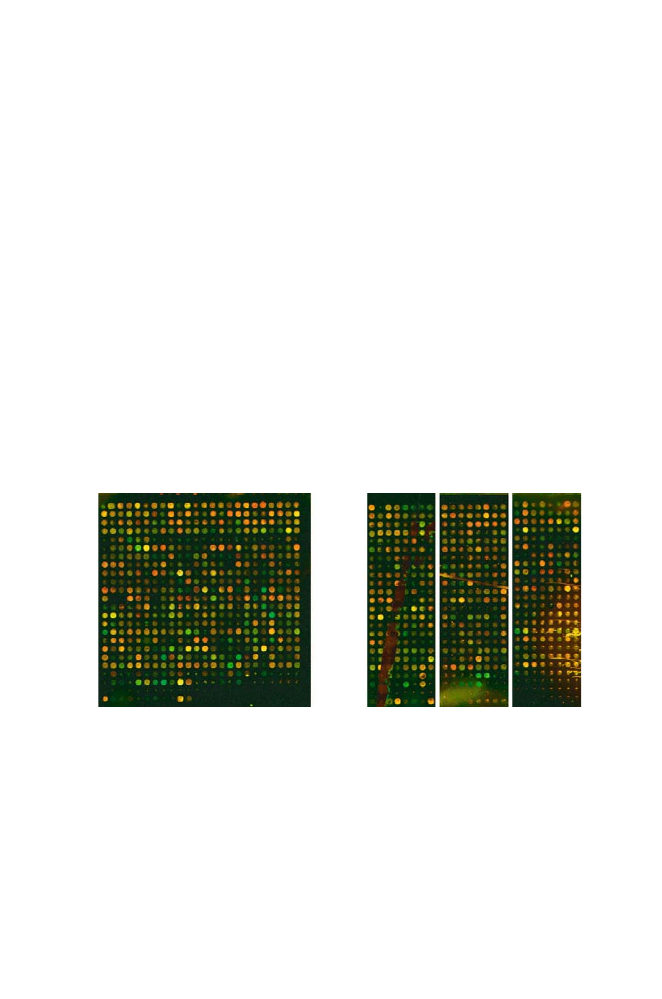

302
11 Measuring Expression of Genome Information
counting intensity from a portion of the slide where no cDNA was spotted,
leading to a low reading. Also, there may be residual nonspecific binding of
hybridization solution not attributable to a specific probe. This produces a
fluorescent background intensity, which should be subtracted from the spot
intensities. For this reason, there is automated software for locating the spot,
delineating its boundaries, and measuring the background to be subtracted
prior to recording the intensity at each wavelength.
An example of the application of this technology is shown in Fig. 11.5
(Arbeitman et al., 2004). In this example, mRNA samples from
dsd
D
mutant
D. melanogaster
(fruit flies) (labeled with Cy5) and from normal adults (la-
beled with Cy3) were each reverse transcribed to cDNA and labeled with the
indicated fluorophore prior to hybridization. Panel A shows one of 12 blocks
of 24
×
24 features from this particular experiment. Red spots correspond to
genes whose expression is higher in the mutant, and green spots correspond
to genes with reduced expression in the mutant. Panel B illustrates some ar-
tifacts that can appear in such experiments. Because such artifacts can occur,
microarray images must be inspected by humans before data are processed.
(Complete automation is not currently feasible.)
A.
B.
Fig. 11.5.
[This figure also appears in the color insert.] Spotted microarray hy-
bridized with target sample representing
Drosophila melanogaster
transcripts. Red
spots correspond to genes whose expression is increased and green spots to genes
whose expression is decreased in comparison with the control. Yellow spots indicate
no change. Panel A: Normal 24
×
24 block of features. Panel B: Portions of blocks
displaying various artifacts, including a tear in the polylysine coating the glass slide
(vertical jagged brown patch, left section), a possible dust particle (linear feature,
center section), and a possible evaporation artifact from a block near the edge of the
array (yellowish patch with streaks, right section). The greenish fluorescence at the
bottom of the center section came from contaminating material in DNA samples
prepared by nonstandard methods. (Image provided by Dr. Michelle Arbeitman,
University of Southern California.)